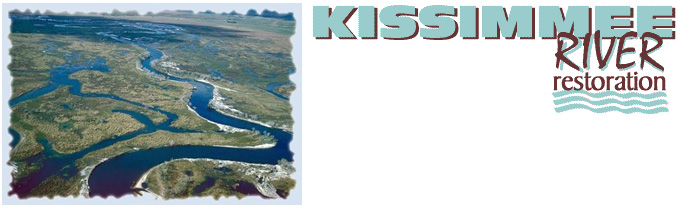

Changing Nature's Course: A Look at Models of Environmental Tipping Points
- Teacher: Debbie Trogdon-Stout
- Download Changing Nature’s Course (Microsoft Word format)
Humans modify the natural environment at many scales. From diverting a tiny stream for better field irrigation to impounding the Colorado River behind Hoover Dam, to encroaching on coastal wetlands and beaches with the construction of vacation homes or military bases in North Carolina, or by changes in our technology that afford us a better living, these changes often have dire consequences upon natural environmental systems.
In this lesson, students will learn about how a major or minor event in which humans modified the physical environment in the United States has created a negative tipping point for a fragile ecosystem. Using the EcoTipping Points Model, students will examine how these changes occur and what solutions can reverse the damage to natural systems.
Lesson Overview
Connections to the Curriculum
Environmental Science, Geography, Social Science, Language Arts, Economics
Connections to the National Science and Geography Standards
- Standard 14: "How human actions modify the physical environment"
- Competency Goal 2: The learner will build an understanding of lithosphere materials, tectonic processes, and the human and environmental impacts of natural and human-induced changes in the lithosphere
Time
Two to three hours/lessons (can be condensed into a single 90 min. block if background on EcoTipping Points has been covered previously)
Materials Required
- Computer with Internet access and/or
- Articles about Environmental Tipping Points
- Human Ecology - Basic Concepts for Sustainable Development by Gerald G. Marten and/or Malcolm Gladwell’s "The Tipping Point: How Little Things Can Make a Big Difference" (Gladwell 2000) * OPTIONAL
- Blank Xpeditions outline maps of various states, one for each student
- NSGS or National Geographic Maps or pre-1960 atlas (if available)
- Wal-Mart brand colored tumble blocks (one pack per student group)
Objectives (Students will)
- Understand the effects of human modification on various environmental ecosystems and habitats and
- Be able to generalize about what they have learned and apply them to human actions and their environmental consequences elsewhere on the globe.
Science Analysis and Geographic Skills
- Asking Environmental and Geographic Questions
- Answering Environmental and Geographic Questions
- Analyzing Environmental and Geographic Information
Suggested Procedure
Opening
Ask students to identify important ways in which humans have used technology to alter the landscape around the world. Write their responses on the board. Give examples, such as the effects of irrigating to increase crop yield or the consequences of building retaining walls to slow beach erosion. Ask students to give examples of how humans modify the environment in intended and unintended ways – think of examples locally.
Development
Have students read print articles (see examples in the materials section above) and/or explore the Web sites below that detail changes that were made by various social groups or corporations and the results of these changes on the local environment. *refer to EcoTipping Points material
- Apo Island, Philippines
- Rajasthan, India
- Bowery, New York
- Andhra Pradesh, India
- Nakhon Sawan, Thailand
- Cochabamba, Bolivia
- La Paz, Bolivia
- Appalachian Mountains, North Carolina
Have students locate these areas on their NSGA or National Geographic outline maps. If you have a map made prior to 1960, compare the topography then with its topography today.
Ask students to list a number of intended effects of the tipping point process. They should also identify and list unintended results. (I have my students map out the negative and positive tipping points using Gerry Marten’s models as the framework.)
Colored Tumbling Blocks Model Activity
Have students identify the different colors of their blocks as factors that influence or have an impact on their ecosystems (Red = Food, Blue = Water, and Yellow = Shelter) Build a tower using random stacking of each color or block; however, each row must contain a block of each color. Proceed to remove each factor in a random manner (using the dice provided with the game) as they record the impact on their ecosystem with each removal. The game proceeds until the ecosystem reaches a collapsed state. Students develop a graph of the results on each of three trials. On the fourth trial, the teacher can add an identified "endangered species" to the top of the stack (I use an egg – each one boiled at a different time and one non-boiled egg for the identified endangered species). Students once again remove the blocks until the tower collapses and the species have lost the resources to survive.
Closing
Ask your students to assume the roles of different people whose lives are in some way connected to the various locations—housing developers, farmers who live near the river’s banks, people who fish, employees of large corporations, etc. Encourage a debate about the best ways of managing the particular ecosystem (BMP – Best Management Practice), discuss the impact that small and large changes can have over time on an ecosystem.
Suggested Student Assessment
Have students write persuasive essays defending a position on when and where humans should modify the natural environment. In making their arguments, students should be able to apply what they have learned in this lesson.
Extending the Lesson
- Have students interview a local urban planner, or invite one to your class. They may want to ask questions, such as:
- What steps does an urban planner or an owner of a business have to perform in order to be granted permission to build?
- Do the steps require an analysis of the impact that construction will have on the natural environment?
- Have students research a business or land development project in their communities. They should research the physical environment of the region before and after construction and make a map of the region. Were all significant environmental consequences anticipated before construction, or were there surprises after the fact? Would students have recommended that the project be allowed if they had been given a voice in the matter? Ask students to write an essay or give a class presentation that details their answers to these questions.
Related Links
- Ecotipping Points: A New Paradigm for Strategic Environmentalism
- Environmental Protection Agency
- Kissimmee River Restoration Project
The Kissimmee Project

Historically the Kissimmee River meandered approximately 103 miles from Lake Kissimmee to Lake Okeechobee through a 1-2 mile wide floodplain. The river and its flanking floodplain consisted of a mosaic of wetland plant communities and supported a diverse group of waterfowl, wading birds, fish, and other wildlife. The historic Kissimmee River was hydrologically unique among North American river systems in that it had prolonged periods of extended floodplain inundation.
Between 1962 and 1971, the river was channelized and two-thirds of the historical floodplain was drained. Excavation of the canal and placement of the spoil material destroyed one-third of the river channel. Implementation of the Kissimmee Flood Control project led to drastic declines in wintering waterfowl, wading bird and game fish populations, as well as loss of ecosystem functions.
Kissimmee River’s current restoration efforts will return a significant portion of the Kissimmee River to its historic riverbed and floodplain and re-establish an environment conductive to the fauna and flora that existed there before the channeling efforts in the 1960’s. To restore the ecological integrity of the damaged ecosystem, the Corps of Engineers will:
- re-establish historic hydrologic conditions
- recreate the historical river/floodplain connectivity
- recreate the historic mosaic of wetland plant communities
- restore the historic biological diversity and functionality
The project area covers 3,000 square miles, stretching from the southern Orlando area south to Lake Okeechobee. Restoration is divided into the Upper Basin (referred to as the Kissimmee Headwaters Revitalization Project) and the Lower Basin (referred to as the Kissimmee Restoration Project). The river’s upper basin includes the Upper Chain of Lakes and extends south through Lake Kissimmee to State Road 60. The lower basin includes the area from Lake Kissimmee to Lake Okeechobee.
In the upper basin, the restoration effort consists of improvements to two canals, changes in managing water levels in Lakes Kissimmee, Hatchineha and Cypress, and the acquisition of land. In the river’s lower basin, engineers will fill about 22 miles of the C-38 canal, excavate nearly nine miles of river channel, and remove S-65B and S-65C water control structures and locks.
These actions will provide a more natural fluctuation of water levels in both the upper and lower basins that will enhance marshes around the lakes and re-establish the river’s hydrology. Fish and wildlife habitat, in the river’s one-to-two mile wide floodplain, will benefit.
Story of the Kissimmee River
The Historic Kissimmee River flowed 103 meandering miles from the Kissimmee Chain of Lakes into Lake Okeechobee. Its 1-2 mile wide floodplain offered a large patchwork of wetland habitats for many unique species. Over 35 species of fish, 16 species of wading birds, 16 species of waterfowl, river otters, many species of invertebrates, amphibians, reptiles and other plants and animals swam, roamed, waded and flew over the extensive 18,000 ha floodplain.
In the 1960s, the U.S. Army Corps of Engineers, because of public pressure to provide more adequate flood protection, channelized the river. The 103-mile winding path of the Kissimmee River was transformed into 56-mile long, 30-ft. deep, 300-ft. wide canal, known today as the C-38 canal.
Before the channelization was even complete, negative impacts on the ecosystem were being noted, such as a decline in water quality and a 90% decline in waterfowl along the river.
Congress in the 1992 Water Resources Development Act authorized the Kissimmee River Restoration Project. The project will restore over 40 square miles of river/floodplain ecosystem including 43 miles of meandering river channel and 27,000 acres of wetlands. The restoration project is a partnership with the South Florida Water Management District (SFWMD) and US Army Corps of Engineers (USACE).
As the restoration effort proceeds, some positive changes have been observed. Sandbars and sandy bottom are signs of improvement in the rivers’ hydrology. In formerly isolated sections of the river, oxbows are flowing again. Emergent and shoreline vegetation has reappeared and is thriving. Waterfowl are returning. Water quality is improving. The project is reestablishing the physical form of the river with its historical water levels and flows, while ensuring existing flood protection is maintained.
{% include "back-to-top.njk" %}